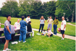

| |
||
| |
||
José María Román Faúndeze-mail: jm.roman@yingli.com webpage: http://www.yinglisolar.com/ |
||
| |
||
|
|
Mi Pequeña Historia: ¿Qué he hecho yo para no merecer esto?Yo nací en Zamora (España), y viví por cerca de un año en Alcañices (Zamora), el pueblo de mi padre, que es la cabeza del partido judicial de Aliste. Esta comarca zamorana hace frontera con el noreste de Portugal. El pueblo de mi madre, Sejas de Aliste, diez kilometros al oeste, es un pueblo pequeño donde los haya. ¡Hombre!, somos más que los de Flechas, pero si nos descuidamos.... Aunque mi abuelo decía que en sus buenos tiempos había 150 familias --unas 800 personas. Que yo recuerde sí que había bastante actividad. Debido a que es un pueblo agricola y ganadero había molinos, herrerías, carpinterías, ferreterías, y como no, bares. Bares que no falten, porque aunque todavía no sabía nada de ello, ya debía olerme que acabaría en Bilbao, bueno, no en el mismo Bilbao, pero a eso ya llegaremos. Este es Patxi que entra
en un
bar y el camarero le dice:
- Pero Patxi, ¡qué llevas un coche a la espalda! Y Patxi se mira por encima del hombro y responde: - ¡Joer! ¡Qué se me ha olvidao quitarme el cinturón!
Cuando tenía dieciseis años nos mudamos a Amorebieta (Vizcaya), a unos diez kilometros de Yurre. Amorebieta está situado en el valle más amplio de Vizcaya, el valle del Ibaizabal (su propio nombre lo indica, ibai=rio y zabal=ancho, amplio, cuya etimología proviene del Euskera, idioma de desconocida procedencia que solamente se habla en la región norte de España y suroeste de Francia), aunque los bilbainos, muy cabezones ellos, se empeñan en decir que la ría es del Nervión. Como uno se supone que debe ir mejorando con el paso del tiempo (aunque esto está por ver), Amorebieta es un pueblo grande, con 20.000 habitantes, y muy buenas comunicaciones con Bilbao. Algunas pequeñas ciudades emblematicas que rodean Amorebieta son Durango y Gernika. Después de un par de años comencé mi carrera de Ciencias Físicas en la Universidad del País Vasco. Yo, en realidad, quería hacer medicina, pero me engañaron; ya hablaré de esto más adelante. Así iba y venía todos los días desde Amorebieta, hiciera frio o calor, hasta el alto en que se encuentra situado el campus de Lejona, que, eso sí, ofrece un paisaje de lo más agradable. Total, que después de cinco años de alternancias entre tormentos insoportables (la agoñía) y momentos entrañables (¡ah! el txoko), firmemente orientado hacia el objetivo final por la responsabilidad de mi compañero de prácticas, y no sin antes pasar por una cura de reposo en Lisboa el año en que era Capital Europea de la Cultura, terminamos la carrera la Promocion del '94 (buena gente donde las haya). Me convencieron para emigrar a Barcelona (Cataluña, España, que no se me enfade nadie) para hacer el doctorado (ahí es donde la cosa se empezaba a parecer a lo que yo quería en un principio). Ya había dicho que se supone que uno mejora con el tiempo, como los buenos vinos, que por cierto, los tienen muy buenos por estas tierras, aunque no tanto como los de La Rioja alavesa, ¡no vayamos a comparar! Barcelona, la segunda ciudad más importante de España, y a todas luces la más innovadora, está localizada en la costa noreste y ofrece un contraste impresionante entre el mar y la montaña. Si todavía no la has visitado ¿a qué estás esperando?, ¿y los otros lugares de los que te he hablado?. Finalmente, con txapela y botijo incluidos (uno no puede olvidar sus raices) terminé defendiendo mi tesis doctoral cuatro años y cuatro días después de empezarla (¡menuda condena!), en la Universitat de Barcelona, y fué entonces, cuando ya me veía con una linea de pastillas de colores encima de la mesa, para recetárselas a los pacientes según la impresión que me produjeran al entrar en mi consulta, que me dijeron que no, que aquello que había conseguido después de tanto tiempo, aunque me otorgaba el título de doctor, no me permitía recetar pastillas. ¡Qué decepción! - ¡Doctor, doctor! Se
me
olvidan las cosas.
- ¿Qué? - ¿Qué de qué?
Para intentar paliar en lo posible las consecuencias de tamaña revelación decidí, sin más, irme a la University of Illinois at Urbana-Champaign, Illinois, EE.UU. Urbana-Champaign aunque no es más grande que Barcelona, si tiene más maiz, menos tráfico y menos gente, porque uno siempre termina estando más cómodo en lugares similares a los de procedencia. Además Chicago está a dos horas y media en coche, aunque me aventurase más bien poco por sus calles (Esa' calle' de Shicago que yo tanto frecuento. Y yo, y yo..., como le gusta cantar a mi amigo Toni). Urbana-Champaign, con dos downtowns y el campustown, ocupa una extensión desmesurada para sus 100.000 habitantes, de los cuales cerca de la mitad son estudiantes. Claro, que teniendo en cuenta la vastura de las llanuras del Midwest no sorprende demasiado. Dos años duró mi estancia, que terminó con el milenio, y todo gracias a una extensión in-extremis, a la que yo mismo me condené; aunque solo fuera para contemplar la belleza del otoño de esos parajes, que se echan de menos por momentos, ¿quién lo iba a decir?, y es que la buena gente siempre acaba dejando huella. Después de mi aventura americana, y cuando tenía más ganas de sentar la cabeza que otra cosa, volví a emigrar forzado por la incompetencia de nuestra administración (¡vea mundo!, ¡hágase un post-doc!). Pero esta vez me fuí más cerca, para tranquilidad de mi madre, a quién le parecía que Évora, en Portugal, estaba aquí al lado como quien dice. En los seis meses que pasé en la Universidade de Évora me encontré con los mejores anfitriones que jamás habría podido imaginar. Con ellos tuve la oportunidad de conocer gran parte de las ciudades portuguesas y la amabilidad de sus gentes. La verdad que para ser de un pueblo a tan solo cinco kilmetros de Portugal casi no lo conocía, pero durante este tiempo me resarcí; incluso aprendí un poco de portugués (con acento francés, eso sí), que cada vez encuentro más bonito, sobre todo por las expresiones que comparte con mi pueblo. Casi con pena volví a España, esta vez sí para quedarme en Madrid. Me incorporé en el Consejo Superior de Investigaciones Científicas (CSIC), donde ya había estado en 1997, aunque todavía no lo había comentado. En ese sentido resulta menos excitante, porque ya conocía la ámplia variedad de ocio, museos, teatros y exposiciones a los que tienes acceso. Pero no conocía lo mejor de todo, y es que al ser la capital el gobierno está aquí, y el abanico de protestas al que puedes asistir es insuperable; es muy relajante, de verdad, ¡probadlo! Yo casi me convierto en profesional del asunto, y estoy esperando a la próxima, porque el ambiente que se repira es bastante festivo, y porque "España no va bien" por mucho que diga el gobierno, pero al menos tomémonoslo con simpatía (no pude ir a la del 11-M, y desde luego esta es una a la que nunca me gustaría tener que ir). Otra de las ventajas de Madrid es que al estar localizada en el centro de la península Ibérica resulta muy fácil hacer una escapadíta de vez en cuando para visitar a todos los amigos que uno ha ido dejando por ahí a lo largo de los años.
Aquí está la historía de mi vida en no tan pocas palabras. Alguna gente se empeña en decir que es de algún sitio en concreto y se niega a ver la realidad que existe por encima de todas esas mezquindades. Muchas veces me han preguntado que de donde soy o de donde me siento. Y a usted, ¿qué le parece? Pues mire, yo creo que, como dicía mi abuelo, la vaca no es de donde nace, si no de donde pace. Con esto no estoy renegando de mis origenes, ¡faltaría más!, solamente digo que debemos integrar todas las experiencias por las que vamos pasando en la vida para hacer mejores personas de nosotros mismos. Y de qué cosas son las que me merezco o dejo de merecerme ya hablaremos en otro momento. |


{kind=link}
{kind=link}
{kind=link}
{kind=link}
{kind=link}
{kind=link}
{kind=link}